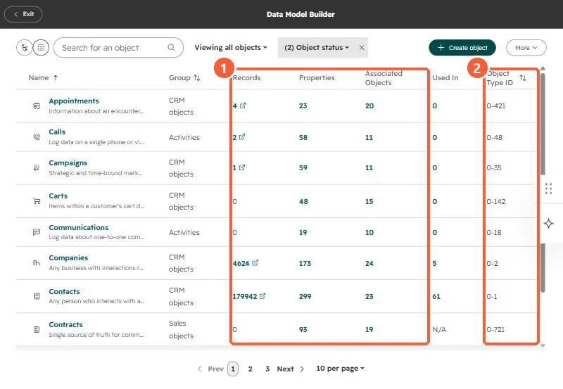

Short answer
Data Management > Data Model lists every object with its group, record count, property count, associated objects, where it is used, and its object type ID. In my demo portal that includes Appointments (0-421), Calls (0-48), Contacts (0-1) and Contracts (0-721). The graph view shows associations, and from there you can create a custom association or activate one so it appears on index pages and in workflows and segments.
1. The table
Open Data Management > Data Model.


2. What to look for
- Objects with records but zero Used in may be unused or fed only by integrations.
- Property counts far above the default suggest cleanup. See checking property usage.
- The object type ID is what APIs and some URLs need. See object type IDs.
3. Associations
In the graph view, click View all next to an object's associated objects. Use the plus button to create a custom association, or the three-dot menu to Activate association. Once active, it shows on index pages and works in workflows and segments. HubSpot can also recommend a data model with AI.